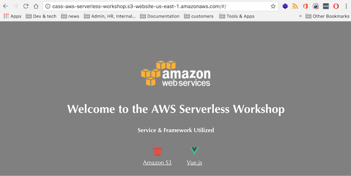

Serverless static website on AWS
 Amazon S3 |
 Vue.js |
Overview

- A User Interface (UI). Of course the solution will be different whether you want to build a traditional website intended for a browser, a native app for mobile phones, etc. For this workshop we'll just build basic html/javascript for a traditional website but the design would not vary significantly. We will use S3 (Simple Storage Service) to serve our static file requests. In practice you'd likely want to include a Content Delivery Network (CDN) such as AWS Cloud Front to serve the static files from Edge locations to provide better performance for the users.
- Dynamic Components. The static files come from S3, but few websites only need static content. We might need to post data to our backend, or query data specific to a given user, or their particular request. We will use Amazon API Gateway to define the various dynamic use cases (APIs) for which we need to serve our pages in the next section of this workshop. We will use AWS Lambda to run the dynamic logic/code to fulfill our requests, which does not require you to provision or manage servers, and manages resiliency and scale on your behalf. We use AWS Step Functions to coordinate the components of distributed applications and microservices using visual workflows.
Enough reading, let's get started!
vue.js & setup
Let's start by setting up a project in your local IDE (or you're welcome to work directly with an editor). Navigate to the aws-serverless-workshop directory that you created in the Prerequisites - OR - setup a project pointing to this directory in your IDE. Let's start up the Vue dev mode server so that we can see our application. From directly within the aws-serverless-workshop, type: npm run devThis should start the Vue server and launch a Hello World Vue webapp that you saw when you performed the pre-requisites. But let's brand our site and bring in some css that's more in line with what we want our website to look like.From a command prompt or terminal shell, Ensure you are in the aws-serverless-workshop directory. Let's first back up some files that we are about to overwrite so that we can understand what's changed:
cp index.html index.html.bak cp src/App.vue src/App.vue.bak cp src/components/Hello.vue src/components/Hello.vue.bak cp src/router/index.js src/router/index.js.bakNow, run the following commands which will copy some updates to those two files as well as bring in some additional resources. PLEASE ensure you are inside the aws-serverless-workshop when you run this command! aws s3 cp s3://aws-serverless-workshop/PetMatch/resources/index.html index.html aws s3 cp s3://aws-serverless-workshop/PetMatch/resources/App.vue src/App.vue aws s3 cp s3://aws-serverless-workshop/PetMatch/resources/components/Hello.vue src/components/Hello.vue aws s3 cp s3://aws-serverless-workshop/PetMatch/resources/router/index.js src/router/index.js aws s3 cp s3://aws-serverless-workshop/PetMatch/resources/components/PetMatch.vue src/components/PetMatch.vue aws s3 cp s3://aws-serverless-workshop/PetMatch/resources/components/PetMatch.vue.withApig src/components/PetMatch.vue.withApig aws s3 cp s3://aws-serverless-workshop/PetMatch/resources/components/PetMatch.vue.withCognito src/components/PetMatch.vue.withCognito aws s3 cp s3://aws-serverless-workshop/PetMatch/resources/components/config.json src/components/config.json aws s3 cp s3://aws-serverless-workshop/PetMatch/resources/assets/app.css src/assets aws s3 cp --recursive s3://aws-serverless-workshop/PetMatch/resources/static staticOptional: Now let's diff the files to see what's changed. (if on Windows try FC instead of diff and DEL instead of rm) diff index.html index.html.bak diff src/App.vue src/App.vue.bak diff src/components/Hello.vue src/components/Hello.vue.bak diff src/router/index.js src/router/index.js.bak rm index.html.bak rm src/App.vue.bak rm src/components/Hello.vue.bak rm src/router/index.js.bakNow we have a simple static webapp utilizing a progressive framework that will help as we continue to build it out. Let's host our website on s3 now so it becomes a proper website not something running off our local drive.:) First we create an S3 bucket called [your unique id]-aws-serverless-workshop. You can do this via the AWS console or with the following CLI commands - but be sure to CHANGE [your unique id] with your login id at work (or other unique identifier). You should probably open a text editor to replace your name as a number of the commands will require replacement. If you do this via the console be sure to configure it as a website with the index document as index.html and the error document as error.html. Because we are going to host this in an S3 Bucket, we are using a cli command to setup our s3 bucket as a website. This will modify the properties tab on your bucket. Once you run this command navigate to your S3 bucket and check out the properties tab to see the effect. NB: Ensure the region in your ~/.aws/config is set to the region in which you will be working. Recommendation is us-east
aws s3 mb s3://[your unique id]-aws-serverless-workshop aws s3 website s3://[your unique id]-aws-serverless-workshop/ --index-document index.html --error-document error.htmlYou may remember that we are running Vue.js in dev mode at this point. We need to convert it to prod mode before we deploy it. Navigate directly inside the 'aws-serverless-workshop' directory. With the next command we use 'npm run build' to build our Vue app in prod mode, and then we push it to our S3 bucket. Be sure to CHANGE [your unique id] to your actual unique id.
npm run build && aws s3 sync dist s3://[your unique id]-aws-serverless-workshop --acl public-readNow navigate to the console and find your S3 bucket. Refresh the bucket and notice that your files have been uploaded from the previous step. Select your bucket and click on the 'Properties' tab. Select 'Static Website Hosting' and copy your URL and enter it into a new tab. You should see a page that looks like this:  Note that this technique of deploying via cli is handy for POCs and isolated development but in practice you would commit your changes to source control repository and utilize CI/CD tooling to drive your full build pipeline.
Amazon S3
Cool? Well not really as it's not really doing much. So <Now let's create the dynamic components>